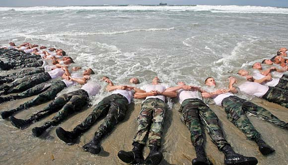

Vaktsälar erbjuder en unik möjlighet att revolutionera konceptet av vaktdjur, särskilt på grund av deras bevisade militära kompetens. Sälar har i decennier tränats av militära organisationer för att utföra komplexa uppgifter under vattnet, såsom minröjning och säkerhetsinspektioner. Denna träning bevisar att sälar inte bara har kapaciteten att lära sig och utföra specifika uppgifter, utan också att de kan arbeta i miljöer och under förhållanden där traditionella vakthundar skulle vara kraftigt begränsade.

Undercover agent

Militrärt trännade mästare

Är sälar de nya vakthundarna